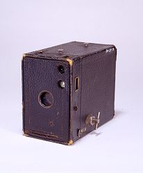

Looking at Artifacts, Thinking about History
Artifacts capture a moment
A fourth way of looking at an artifact is to think about its place in history. Artifacts are time capsules. They embody the tastes and values of an era. They mark a stage of technological evolution. They evoke memories of a specific time and place. Different objects, from different times, look different, and were used differently. Objects can tell us something of their times.

This Kodak Brownie camera was used by Bernice Palmer to photograph survivors of the Titanic disaster in 1912. Think about the ways this Kodak camera captured a moment—not just by taking a photograph, but by preserving the history of an event, an era, an invention, a cultural phenomenon, and a woman's life.
- A Tragic Event. The "Unsinkable" Titanic, a British steamship—the largest and most luxurious passenger liner ever built—sank on April 15, 1912, during its maiden voyage from Southampton, England, to New York City. Over 1,500 lives were lost after the ship struck an iceberg in the north Atlantic Ocean, about 400 miles south of Newfoundland. The Carpathia, a passenger liner bound for the Mediterranean, received the Titanic's distress call and arrived within hours to rescue the 705 survivors. Using this camera, Carpathia passenger Bernice Palmer took photographs of the Titanic survivors and the iceberg that sank the great ship. After the Carpathia returned to New York, a reporter paid $10 to publish Palmer's pictures.
- A Visual Age. The beginning of the twentieth century marked a new era in American history: the age of images. A 1911 editorial in Harpers Weekly proclaimed, "We can't see the ideas for the illustrations. Our world is simply flooded with them." Henry R. Luce, founder of Time and Life magazines, wrote in 1937 that "The photograph is... the most important instrument of journalism which has been developed since the printing press." This Kodak camera was just one of many instruments that helped people visualize moments like the Titanic disaster. Newspapers, magazines, newsreels, stereographs, and other media transformed current events into a series of images. Many of these images have become part of our nation's collective memory.
- A Technological Moment. How was it that eighteen-year-old Bernice Palmer had a camera with her aboard a passenger ship in 1912? The Kodak Brownie camera, introduced in 1900, represented a series of technological innovations that made it possible for millions of people to own cameras by the early twentieth century. With its simple features and affordable price tag, this Kodak Brownie camera captured a moment when, for the first time, almost anybody could be a photographer.
- A Moment in a Life. In April of 1912, Bernice Palmer, an eighteen-year-old from Ontario, Canada, had just graduated from finishing school. To celebrate, she and her mother boarded the Carpathia for a cruise to the sunny Mediterranean. Four days out from New York, their ship suddenly changed course to rescue survivors from the Titanic. This Kodak Brownie camera, which Palmer expected would capture memories of her Mediterranean adventure, became instead a poignant souvenir of her close encounter with tragedy. In 1986, Palmer donated her camera and photographs to the Smithsonian.